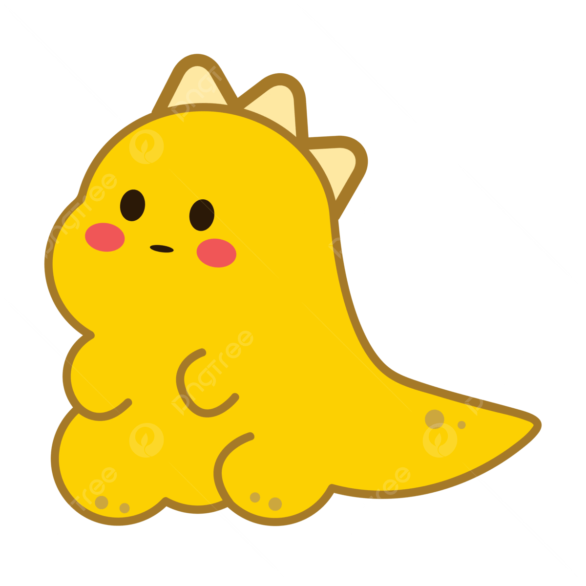

• NET Junior Programmer with over 4 years of working experience in Agile project coordination, task and issue tracking,
stakeholder communication,and system documentation while supporting enterprise distribution management systems.
• 3+ years of working experience in .Net , C# and in SQL.
• 3+ years of working experience in JavaScript.
• Worked with clients like KAT SOLUTIONS SDN BHD, TURNKEY CONSULTING SDN BHD etc.
• Previously engaged as a .NET Junior Programmer from APR 2022 – JAN 2026.
Email:syimahaziz98@gmail.com
• CYBERSECURITY FOUNDATION ISSUED BY: PECB
Position: .NET Junior Programmer
Industry: Distribution Management
Reason for Job Change: Layoff.
Responsibilities:
• Developed, maintained, and upgraded .NET websites, ensuring optimal performance and user experience.
• Troubleshot resolved 20+ technical issues, improving system reliability.
• Designed and optimized SQL queries and stored procedures, enhancing data retrieval speed and accuracy.
• Executed data transformation and loading (ETL) for the Digi-Celcom system merger, ensuring seamless integration.
• Modified and fixed errors in stored procedures and views, improving database efficiency.
• Managed database performance and implemented optimization strategies.
• Conducted data analysis and troubleshooting using SQL, supporting operational decision-making.
• Automated ETL processes to streamline data integration and reduce manual effort.
• Performed server maintenance tasks, including certificate renewals.
• Prepared weekly status reports, meeting minutes, and project documentation.
• Tracked risks, issues, and action items to support project management.
• Assisted with change requests and functional requirement updates.
Position: Junior IT Helpdesk Analyst (L2)
Industry: Cyber security
Reason for Job Change: Project ended.
Responsibilities:
• Providing support to users and being the first point of contact for error reporting.
• Managing technical documentation using Confluence and performing daily health check
• Responsible for addressing or properly triaging alerts generated for infrastructure, databases, and applications, among other things
• Provide world class service through remote support of laptops and servers including Microsoft Windows 10 and other supported systems.
• Provisioning access to the network and applications as requested to enable global users
• Diagnose and resolve unique, nonrecurring problems associated with applications and operating systems.
• Determine the source of problems and classify their level, priority, and nature on ticketing tools (ServiceNow).
• Create alternative methods of completing tasks, correcting user errors and system
• Inconsistencies to improve user experience.
• Excellent communication (written and verbal) to provide users with the direction needed to resolve issues remotely.
• Ability to on-board new staff
• Account creation and management in Active Directory, Network Management tools, security, and backup agents.
• Perform JML (Joiner, Mover, Leaver) process in SailPoint
• Knowledge of Microsoft 0365, Jira and Microsoft Azure
Position: IT Intern
Position Level: Entry level
Industry: Government Administration
Responsibilities:
• Troubleshoot technical issues.
• Fix network issues.
• Resolve hardware configuration and video conference setup.
• Ensure software installation completed successfully and ready to use.
• Prepare technical documentation.
• Assist in preparation of paperwork for broadband distribution projects.
Responsibilities:
• Modified UI components to support new features and improvements
• Updated SQL views to reflect enhanced business logic and reporting needs
• Modified and maintained stored procedures for data processing and system enhancements
• Assisted in testing and debugging to ensure changes functioned as expected
• Collaborated with senior developers to implement enhancement requirements
Responsibilities:
• Supported demarcation activities involving bulk data remapping in SQL databases
• Developed and executed SQL scripts to update, remap, and align data based on new demarcation rules
• Validated data accuracy and consistency before and after bulk updates
• Performed impact analysis to identify affected records and dependencies
• Assisted in resolving data discrepancies and rollback scenarios
• Coordinated with project team to ensure data changes met business requirements
• Provided post-deployment support and verification
Responsibilities:
• Supported data migration activities from legacy systems to the new platform
• Prepared, validated, and reconciled data to ensure accuracy and completeness
• Assisted in database scripting, data extraction, transformation, and loading (ETL)
• Performed data integrity checks before and after migration
• Troubleshot migration issues and supported defect resolution
• Collaborated with developers, project coordinators, and stakeholders during migration phases
• Provided post-migration support and verification
• UNIVERSITI TEKNOLOGI MARA (UITM) TERENGGANU, MALAYSIA
Bachelor of Computer Science, 2017-2021
• KEDAH MATRICULATION COLLEGES
Matriculation (Science Computer), 2016-2017